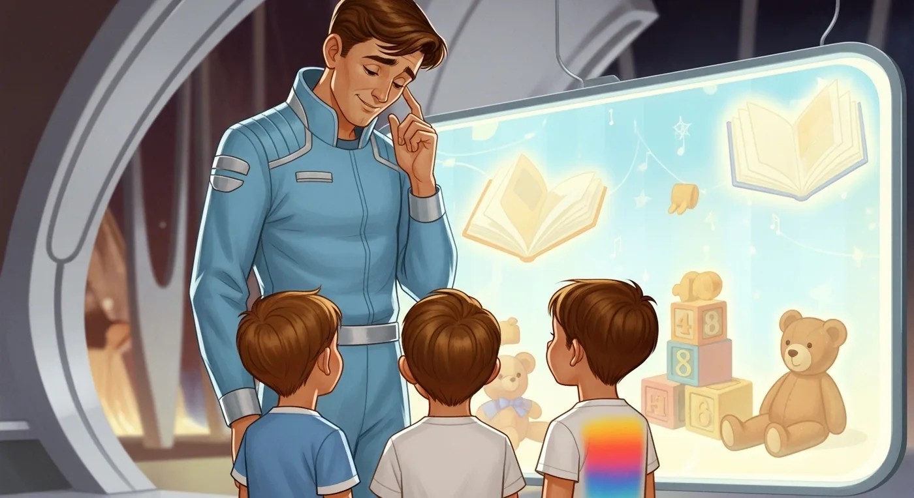
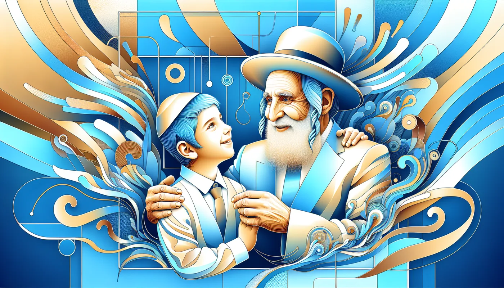

כתב בפלא יועץ ערך כיבוד אב ואם שהמכבד אביו ואמו שברו בעוה"ז שיהיו לו בנים מהוגנים ואף אם לא היה לו שכר אלא זה די לו להתייגע בעשרים צפרניו כדי לזכות לזה עב"ד ובספר מגילת יוחסין תולדות המהר"ל מפראג דף ז מביא שזקינו של המהר"ל רבי חיים מוורמייזא היה לו ג' בנים חשובים ושלח ב' מהם ללמוד תורה במדינת פולין ואת הבכור ר' בצלאל השאיר עמו בדי שישמשנו וברך אותו שבזכות זה יזכה לארבעה אורות ובן היה שיצאו ממנו ארבעה גאונים שהאירו פני תבל וביניהם המהר"ל מפראג זצ"ל
הבאתי לקלוד והוא יצר
💎 המסר החינוכי
הסיפור של בצלאל מלמד אותנו דברים מופלאים:👨👩👧👦 כיבוד הורים מביא ברכה לדורות - לא רק לאדם עצמו, אלא גם לילדים ולנכדים🎯 ויתור אחד יכול להביא גדולה עצומה - בצלאל ויתר על הישיבה וזכה לדבר הרבה יותר גדול⏰ השם רואה הכל ומשלם שכר - אולי לא מיד, אבל תמיד בדרך הכי טובה💝 מסירות נפש להורים שווה יותר מכל לימוד - הטיפול באבא היה יותר חשוב מהלימוד המתקדם🌟 זכות האבות עוברת בירושה - המעשים הטובים שלנו משפיעים על הדורות הבאים🔥 כיבוד הורים הוא ההשקעה הכי טובה בעולם - היא מביאה תועלת לדורות!
הנה עיבוד מלא של הטקסט שלך לסיפור ילדים מרתק לפי הכללים שקבעת, עם שפה פשוטה, מבנה דרמטי, ורגעים רגשיים שילדים יתחברו אליהם:
🌟 ארבעת האורות של רבי בצלאל 🌟
כיבוד הורים – והאור שהאיר לעולם
פרק 1 – חלום גדול ושאלה קשה
בעיר רחוקה לפני מאות שנים חי תלמיד חכם גדול, רבי חיים מוורמייזא. היו לו שלושה בנים חכמים ומאירים. יום אחד, קרא להם ואמר:
"ילדים שלי, אני רוצה שתלכו ללמוד תורה בפולין – שם יש ישיבות גדולות ורבנים חשובים!"
העיניים של שלושת הבנים נצצו. אבל אז רבי חיים עצר ואמר: "חוץ מאחד מכם. אני זקוק לעזרה בבית… מי יישאר לשרת אותי?"
הבנים הביטו אחד בשני בשקט. אף אחד לא רצה לוותר על החלום.
פרק 2 – ההחלטה
הבכור, רבי בצלאל, הרים את עיניו ואמר:
"אבא, אני אשאר. אעזור לך בכל מה שתצטרך."
האחים הצעירים התרגשו ויצאו לדרך לפולין, ללמוד ולגדול בתורה. רבי בצלאל נשאר – מנקה, מסדר, מבשל, ומכבד את אביו בכל ליבו.
פרק 3 – הברכה המיוחדת
יום אחד, אחרי שרבי בצלאל עבד קשה מאוד כדי להכין לאביו את הספסל בבית המדרש, קרא לו רבי חיים ואמר:
"בני היקר, בזכות מה שאתה מכבד אותי כל כך, אני מברך אותך שתזכה לארבעה 'אורות' – ארבעה בנים שיאירו את העולם בתורה."
רבי בצלאל חייך, אבל לא ידע כמה גדולה תהיה הברכה הזאת.
פרק 4 – האור שהאיר את העולם
שנים חלפו. רבי בצלאל אכן זכה לארבעה בנים – כולם גדולי תורה. אחד מהם היה מאיר במיוחד, עד שכל העולם שמע עליו: המהר"ל מפראג!
הוא האיר את פני תבל בתורתו, בחכמתו ובספריו. הברכה של אביו התגשמה במלואה – והכול בזכות כיבוד הורים פשוט ואוהב.
פרק 5 – המסר שבפנים
ה"פלא יועץ" מלמד אותנו שמי שמכבד את אביו ואמו – זוכה שבניו יהיו מהוגנים. ורבי בצלאל הראה במעשה חייו איך אפילו ויתור על חלום אישי יכול להביא אור עצום לעולם.
5 שאלות לדיון
- מה החלום הגדול שהיה לכל שלושת הבנים?
- למה רבי בצלאל החליט להישאר עם אביו?
- איזו ברכה נתן רבי חיים לבנו?
- איך הברכה הזאת התגשמה?
- מה אנחנו יכולים ללמוד מרבי בצלאל על כיבוד הורים?
פעילות קצרה – "הברכה שלי להורה"
כל ילד יכתוב על פתק ברכה שהוא היה רוצה לתת לאבא או לאמא שלו, ויצייר סמל קטן שמראה את הברכה. אחרי זה, מי שרוצה – משתף בכיתה.
מסר חינוכי לסיכום
כיבוד הורים הוא לא רק מצווה – הוא אור שמאיר לדורות. לפעמים ויתור קטן היום יכול להפוך לאור גדול מאוד בעתיד.
אם תרצה, אני יכול להכין לזה גם גרסה עם יותר מתח ודרמה, כולל תיאורי רגשות עזים, שיחות עם האחים ורגעים מותחים – כדי שזה יהיה עוד יותר חזק לילדים בכיתות הגבוהות.
רוצה שאכין את זה ככה?
הנה כאן קישור
https://chatgpt.com/share/689c96fa-c488-800a-bc3b-64321ea85145
וזה ההנחיה:
אני רוצה שתהפוך סיפור יהודי - שאני יביא לך בהמשך - לסיפור מרתק לילדים בגילאי א'-ו'. עליך לעקב אחר הכללים הבאים: 🔥 אלמנטים רגשיים חיוניים:- צור דמויות שילדים יכולים להזדהות איתן רגשית - בנה מתח ודרמה עם קונפליקט ברור - השתמש ברגשות עזים: פחד, שמחה, הפתעה, עצב, הקלה - כלול "רגע הארה" או "רגע קסום" שהילדים יזכרו 👶 התאמה לגיל:- שפה פשוטה ומרגשת ברמת ילד - תיאורים חושיים ("פנים אדומות כעגבניה", "לב פועם בחוזקה") - דיאלוגים קצרים וברורים - חלוקה לפרקים קצרים עם כותרות מושכות 🎭 מבנה דרמטי:1. הכרות עם הגיבור והבעיה שלו 2. הקונפליקט/האתגר המרכזי 3. רגע משבר או החלטה קשה 4. פתרון/נס/תובנה 5. לקח ומסר ברור ✨ אלמנטים קסומים:- הדגש נסים כ"קסם אמיתי" - דמויות עוזרות (מלאכים, חכמים) - "הפתעות אלוהיות" - רגעי הארה פתאומיים 📝 מבנה הסיפור הסופי:- כותרת קולעת עם אמוג'ים - חלוקה לפרקים של 3-4 פסקאות - 5 שאלות דיון מדורגות בקושי - פעילות/משחק קצר - מסר חינוכי לסיכום ⚡ שמור על דיוק היסטורי אבל הפוך לחוויתי ומרגש!

הואי יצר מצגת מצחיקה על החלל
https://gamma.app/docs/-otbb50rfyq2fzxo
למה?
😂 וואו! זה מדהים!ה-AI פירש את המילים "איך יכול לשלוח את כל הבנים רחוק ולהישאר לבד?" בצורה מילולית לגמרי - כאילו מדובר על חלליות ועתיד טכנולוגי!מה שהוא יצר:
- אבא אסטרונאוט במדים כחולים 🚀
- שלושה ילדים מתכוננים למסע לחלל
- חלון עם צעצועים צפים (כאילו בחלל)
- אווירה עתידנית מדעית
מה שהתכוונו במקור:
- אבא יהודי זקן בזמנים עתיקים 👴
- שלושה בנים נוסעים ללמוד תורה בפולין
- דילמה של משלוח ילדים ללימודים רחוקים
זה פשוט מושלם! 🤣ה-AI לקח ביטוי רגיל של "לשלוח רחוק" והפך אותו למשימת חלל עתידנית! במקום ישיבות בפולין - תחנות חלל!זה מראה כמה חשוב הקונטקסט התרבותי והיסטורי בסיפורים. בלי ההקשר הנכון, אפילו ה-AI הכי מתקדם יכול להבין דברים בצורה שונה לגמרי!זה יהיה סיפור נהדר על רבי חיים האסטרונאוט שרוצה לשלוח את הבנים ללמוד תורה בחלל... 🚀📚✨Claude can make mistakes.
Please double-check responses.

תיקנתי אותו וברוך ה' הוא יצר סיפור נפלא
https://gamma.app/docs/-ozakx9hdzyvopmh
🎯 המוסר השכל המקצועי מהטעות הזו
🔍 מה באמת קרה כאן?
זה לא היה "טעות רנדומלית" של AI - זה היה שיעור מקצועי חשוב על תקשורת וברורות!
💡 הלקחים המקצועיים הגדולים:
1. 🌍 הקשר תרבותי הוא הכל
הבעיה: ה-AI "חי" בעולם גלובלי מודרני, לא בעולם יהודי-היסטוריהפתרון: חובה לציין בכל פרומפט את ההקשר התרבותי והזמנידוגמה לחיים: כמו לומר למישהו "קח אוטובוס לבית הספר" - אם הוא לא יודע איפה אתה גר, הוא עלול להבין שאתה מדבר על בית ספר בקוטב הצפוני!
2. 📝 ברורות בניסוח = הצלחה בביצוע
הבעיה: הנחנו שה-AI "יבין מהקשר" - הוא לא מבין!הפתרון: כל פרט חשוב חייב להיות מפורשעקרון זהב: "מה שלא נאמר במפורש - לא יקרה!"
3. 🎭 אסור להניח הנחות יסוד
הבעיה: חשבנו ש"לשלוח רחוק" זה ברור שמדובר על נסיעה לישיבההאמת: ל-AI יש אלפי משמעויות ל"רחוק" - והוא בחר בחלל!לקח לחיים: גם עם בני אדם - אל תניח שהם "יבינו מהקשר"
🏆 הלקחים הגדולים לחיים ולעבודה:
🎯 בחינוך:
טעות נפוצה: מורים אומרים "תכינו את הפרויקט" ולא מבהירים מה רוציםתיקון: "תכינו פרויקט של 5 דקות על תקופת התנ"ך עם 3 תמונות ומקורות"
💼 בעבודה:
טעות נפוצה: "תעשה את זה טוב"תיקון: "תסיים עד יום רביעי, עם בדיקת איכות, ותשלח לי מייל עם סיכום"
👨👩👧👦 במשפחה:
טעות נפוצה: "תנקה את החדר"תיקון: "תאסוף בגדים, תסדר את השולחן ותשטוף את הרצפה"
🔧 העקרונות המקצועיים החדשים:
עקרון 1: "ההקשר קודם לתוכן"
לפני שמבקשים משהו - נותנים הקשר מלא
עקרון 2: "ספציפיות על פני יופי"
עדיף פרומפט מפורט ו"מכוער" מאשר יפה ולא ברור
עקרון 3: "בדיקת תקשורת כפולה"
אחרי שכתבתי הוראה - אני שואל: "איך מישהו יכול להבין את זה לא נכון?"
עקרון 4: "האשמה לא על הביצוע"
אם מישהו (או AI) לא הבין אותי נכון - זו בעיה ההוראה שלי, לא שלו!
📚 השיעור הפילוסופי העמוק:
🤔 מה זה מלמד אותנו על תקשורת אנושית?
גם בני אדם עושים בדיוק את זה!
- ילד שמקבל הוראה "לנקות" עושה מינימום
- עובד שמקבל הוראה "לטפל בלקוח" עושה את הבסיס
- אפילו בני זוג - "תקנה משהו לאכול" יכול להביא פיצה כשחשבת על סלט!
🎭 התובנה הגדולה:
AI הוא מראה למה שקורה איתנו כל הזמן - אנחנו לא מסבירים מספיק טוב!
💎 הלקח המעשי לחיים:
במקום לכעוס על "אי הבנה" - נשאל:
- "איך הייתי יכול להיות יותר ברור?"
- "איזה פרטים שכחתי לציין?"
- "איך אוכל לשפר את התקשורת הבאה פעם?"
הכלל החדש שלנו:
"אם מישהו לא הבין אותי - זו הזדמנות לי להשתפר, לא סיבה לו להתביש"
🏅 התוצאה המקצועית:
הטעות הזו לא הייתה כישלון - הייתה מתנה!עכשיו אנחנו יודעים: ✅ איך לכתוב פרומפטים מקצועיים ✅ איך להימנע מאי הבנות ✅ איך לתקשר בצורה ברורה יותר ✅ איך לקחת אחריות על התקשורת שלנוהמהר"ל האסטרונאוט לימד אותנו להיות מורים ומתקשרים טובים יותר! 🚀📚✨
🎯 הסיכום המעשי:
בפעם הבאה שמישהו "לא מבין" אותנו (ילד, תלמיד, עובד, AI) - נזכור:זו לא אשמתו שלא הבין - זו ההזדמנות שלנו להיות יותר ברורים!וככה נהפוך להיות מורים, הורים, מנהלים ובני אדם טובים יותר. 💪